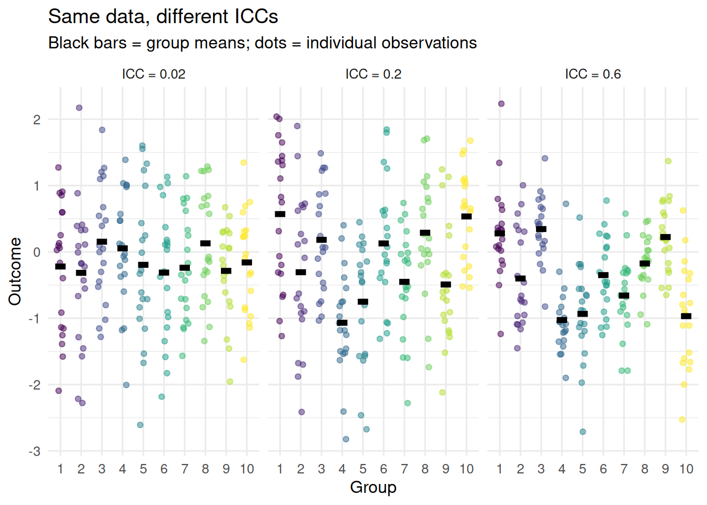
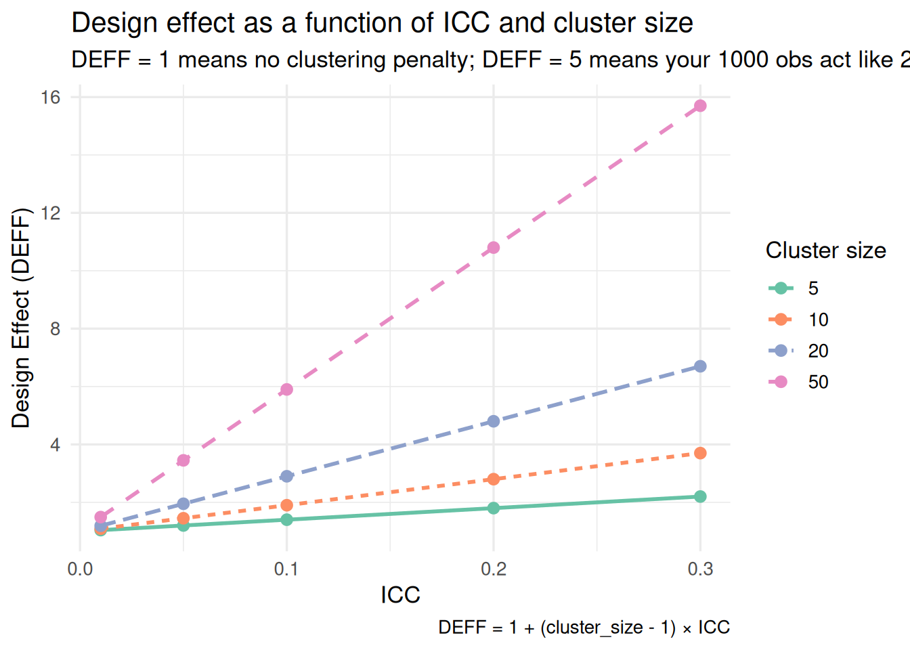
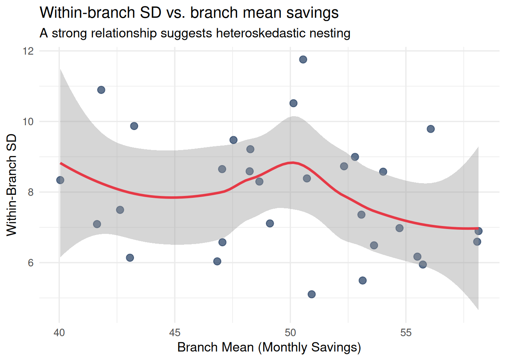

Nested structure is not binary — it is not just “present” or “absent.” Nesting can be strong (observations within a group are nearly identical) or weak (observations within a group are barely more similar than observations from different groups). The strength of nesting determines how badly standard analysis fails.
We need a number that quantifies this strength. That number is the Intraclass Correlation Coefficient (ICC).
The Intraclass Correlation Coefficient
The ICC answers a deceptively simple question:
Of all the variance in my outcome, what fraction is due to group membership?
If you pick two observations at random from the same group, how correlated will they be? That correlation is the ICC.
where \(\sigma^2_{\text{between}}\) is the variance in group means, and \(\sigma^2_{\text{within}}\) is the variance of individual observations around their group mean.
NoteInterpreting ICC Values
ICC ≈ 0: Knowing which group an observation is in tells you almost nothing. Group membership barely predicts the outcome. Nesting is present but weak.
ICC ≈ 0.05–0.15: Typical for many psychological studies. Modest clustering. Looks small but has real consequences for inference.
ICC ≈ 0.20–0.40: Strong clustering. Common in organizational data (employees within firms), educational data (students within schools), or within-person repeated measures.
ICC ≈ 1.0: All variance is between groups. Observations within a group are identical. Knowing the group tells you everything.
Let’s see three cases:
Code
# Generate data with three different levels of ICCmake_grouped_data <-function(icc, n_groups =10, n_per_group =20) { sigma_between <-sqrt(icc) sigma_within <-sqrt(1- icc) group_means <-rnorm(n_groups, 0, sigma_between)expand_grid(group =1:n_groups, obs =1:n_per_group) |>mutate(y = group_means[group] +rnorm(n(), 0, sigma_within),icc_label =paste0("ICC = ", icc) )}df_icc <-bind_rows(make_grouped_data(0.02),make_grouped_data(0.20),make_grouped_data(0.60))ggplot(df_icc, aes(x =factor(group), y = y, color =factor(group))) +geom_jitter(width =0.2, alpha =0.5, size =1.5) +stat_summary(fun = mean, geom ="crossbar", width =0.5,color ="black", linewidth =0.8) +facet_wrap(~ icc_label, ncol =3) +scale_color_viridis_d() +labs(title ="Same data, different ICCs",subtitle ="Black bars = group means; dots = individual observations",x ="Group",y ="Outcome" ) +theme_minimal(base_size =12) +theme(legend.position ="none")

When ICC = 0.02, the group means barely differ — the groups look almost interchangeable. When ICC = 0.60, the group means dominate: knowing which group you are in tells you most of what you need to know about someone’s score.
How to Compute the ICC in R
The ICC comes directly from a null (intercept-only) multilevel model — one with no predictors, just a random intercept for the grouping variable. The model partitions total variance into between-group and within-group components.
Code
# Simulate a dataset: households nested within bank branches# (each branch has a different financial coaching culture and local economic environment)n_branches <-30n_per_branch <-15branch_effects <-rnorm(n_branches, 50, 6) # between-branch variance in savings behaviordf_branches <-expand_grid(branch =1:n_branches,household =1:n_per_branch) |>mutate(monthly_savings = branch_effects[branch] +rnorm(n(), 0, 8) # within-branch variance )# Fit the null model: only branch random intercept, no predictorsnull_model <-lmer(monthly_savings ~1+ (1| branch), data = df_branches)summary(null_model)
Linear mixed model fit by REML ['lmerMod']
Formula: monthly_savings ~ 1 + (1 | branch)
Data: df_branches
REML criterion at convergence: 3209
Scaled residuals:
Min 1Q Median 3Q Max
-3.1665 -0.6342 -0.0344 0.6918 2.6737
Random effects:
Groups Name Variance Std.Dev.
branch (Intercept) 21.24 4.609
Residual 65.45 8.090
Number of obs: 450, groups: branch, 30
Fixed effects:
Estimate Std. Error t value
(Intercept) 49.8255 0.9239 53.93
cat("\nThis means", round(icc_value *100, 1), "% of the variance in monthly savings")
This means 24.5 % of the variance in monthly savings
Code
cat("\nis explained simply by which branch the household belongs to.\n")
is explained simply by which branch the household belongs to.
The performance package provides a cleaner interface:
Code
library(performance)icc(null_model)
ICC_adjusted
ICC_unadjusted
optional
0.2450301
0.2450301
FALSE
The ICC here reflects how much the branch environment — local economic conditions, coaching culture, program availability — shapes savings behavior beyond household-level characteristics. A branch ICC of 0.20 would mean that simply knowing which branch a household belongs to explains 20% of the variance in their savings outcomes.
Why Even a Small ICC Is a Big Problem
WarningCritical Reviewer Challenge: Small ICC Does Not Mean Clustering is Irrelevant
A common mistake: researchers see a small ICC (say, 0.05) and conclude the clustering penalty is negligible. This is wrong when cluster sizes are large. The relevant quantity is the design effect, which multiplies the ICC by the cluster size.
With 50 transactions per household and an ICC of 0.05: \[\text{DEFF} = 1 + (50 - 1) \times 0.05 = 1 + 2.45 = 3.45\]
Your nominal 500 transaction-level observations act like only \(500 / 3.45 \approx 145\) independent observations — a 3.5× penalty from an ICC that many researchers would dismiss as “small.”
The reason is the design effect (DEFF): a multiplier that tells you how much your effective sample size shrinks due to clustering.
deff_df <-expand_grid(icc =c(0.01, 0.05, 0.10, 0.20, 0.30),cluster_size =c(5, 10, 20, 50)) |>mutate(deff =1+ (cluster_size -1) * icc,effective_n =1000/ deff,label =paste0("n = ", cluster_size) )ggplot(deff_df, aes(x = icc, y = deff, color =factor(cluster_size),linetype =factor(cluster_size))) +geom_line(linewidth =1) +geom_point(size =2.5) +scale_color_brewer(palette ="Set2", name ="Cluster size") +scale_linetype_discrete(name ="Cluster size") +labs(title ="Design effect as a function of ICC and cluster size",subtitle ="DEFF = 1 means no clustering penalty; DEFF = 5 means your 1000 obs act like 200",x ="ICC",y ="Design Effect (DEFF)",caption ="DEFF = 1 + (cluster_size - 1) × ICC" ) +theme_minimal(base_size =13)

JDM example: Suppose you have 300 consumers in 15 bank branches of 20 consumers each, and the ICC for monthly savings on your outcome is 0.10 — a value common in branch-level financial data:
Your 300 observations act like only \(300 / 2.9 \approx 103\) independent observations. You have nearly three times less statistical power than the raw sample size suggests. If you treat 300 clustered observations as 300 independent ones, your standard errors are too small, your p-values are too small, and your confidence intervals are too narrow.
Code
# Simulate Type I error inflation from ignoring clusteringsimulate_inflation <-function(icc, n_groups =20, n_per_group =10, n_sims =2000) { sigma_between <-sqrt(icc) sigma_within <-sqrt(1- icc) p_values <-replicate(n_sims, { group_effects <-rnorm(n_groups, 0, sigma_between) y <-rep(group_effects, each = n_per_group) +rnorm(n_groups * n_per_group, 0, sigma_within) x <-rnorm(n_groups * n_per_group)t.test(y[x >0], y[x <=0])$p.value })mean(p_values <0.05)}icc_grid <-c(0, 0.05, 0.10, 0.20, 0.30)type1_rates <-sapply(icc_grid, simulate_inflation)tibble(ICC = icc_grid, `False Positive Rate`= type1_rates) |> knitr::kable(digits =3,caption ="Type I error rate when ignoring clustering (nominal alpha = 0.05)")
Type I error rate when ignoring clustering (nominal alpha = 0.05)
ICC
False Positive Rate
0.00
0.052
0.05
0.054
0.10
0.053
0.20
0.052
0.30
0.060
When ICC = 0, ignoring clustering is fine — you get the expected 5% false positive rate. But as ICC grows, so does your false positive rate. At ICC = 0.20, you are rejecting the null hypothesis incorrectly nearly twice as often as you should be.
Assumptions of the ICC
The ICC is not just a number — it embodies assumptions. Checking those assumptions is part of using it correctly.
WarningAssumption 1: Groups are exchangeable
The ICC assumes that groups are drawn from a common population, and that the relationship between observations within a group reflects a common process. If your groups are wildly different in kind — not just in degree — the ICC may not characterize the nesting correctly.
How to check: Look at group means and within-group variances. Are any groups wildly different from the rest? Could the nesting structure be non-stationary (e.g., the within-group correlation is strong in some groups, absent in others)?
WarningAssumption 2: The grouping variable captures the relevant nesting
A single ICC assumes there is one meaningful level of nesting. If data is actually three-level (observations in therapists in clinics), a single ICC from a two-level model will be misspecified.
How to check: Fit null models at each level and compute ICCs for each. Compare the variance components.
WarningAssumption 3: The ICC is stable across groups
A standard ICC treats within-group variance as homogeneous across groups. In reality, some groups may be much more variable than others (heteroskedasticity at level 2).
How to check: Plot within-group standard deviations against group means. A strong relationship suggests heteroskedasticity.
Code
# Check: is within-group variance stable across bank branches?df_branches |>group_by(branch) |>summarise(group_mean =mean(monthly_savings),group_sd =sd(monthly_savings),n =n() ) |>ggplot(aes(x = group_mean, y = group_sd)) +geom_point(size =3, color ="#1e3a5f", alpha =0.7) +geom_smooth(method ="loess", se =TRUE, color ="#e63946") +labs(title ="Within-branch SD vs. branch mean savings",subtitle ="A strong relationship suggests heteroskedastic nesting",x ="Branch Mean (Monthly Savings)",y ="Within-Branch SD" ) +theme_minimal(base_size =13)

In this simulated dataset, there is no strong relationship — within-branch variance is roughly constant across branches. That is reassuring, but not always the case in real data. A common violation: wealthier branches tend to have higher and more variable savings behavior, because high-income households have more discretionary slack.
ICC in Experimental Research: Two Sources of Non-Independence
The ICC applies equally to experimental designs — but the sources of non-independence are different, and there are typically two of them at once.
In a within-subjects experiment, each participant responds to multiple stimuli or conditions. Two responses from the same participant will be more similar than responses from different participants: this is the participant-level ICC. Two responses to the same stimulus (rated by different participants) will also be more similar than responses to different stimuli: this is the stimulus-level ICC.
NoteTwo ICCs in a Crossed JDM Design
Consider a willingness-to-pay study: 60 consumers each evaluate 20 financial products (savings accounts, insurance plans, investment funds). The outcome (WTP in euros) has clustering at two levels simultaneously:
Participant ICC: Consumers differ in how generous or cautious they are overall. A high-WTP consumer’s responses across products are more similar to each other than to a different consumer’s responses.
Product ICC: Some products attract systematically higher WTP regardless of who evaluates them — because of perceived quality, brand, or framing. Responses to the same product across participants share variance.
Ignoring either ICC inflates the Type I error rate for any focal comparison (e.g., whether a transparent fee disclosure increases WTP). This is why Module 1 Part 6 introduces crossed random effects: (1 | participant) + (1 | product) models both ICCs simultaneously, and the design-effect penalty compounds across both levels.
# Crossed design: two ICCsnull_crossed <-lmer(wtp ~1+ (1| participant) + (1| product), data = df_wtp)icc(null_crossed) # returns ICCs for both grouping levels
In typical consumer valuation studies, product ICCs of 0.10–0.25 are common — meaning that 10–25% of the variance in WTP is attributable to which product was being evaluated, not to who evaluated it. Ignoring this inflates false positives for any framing manipulation applied at the product level.
The ICC as a Scientific Finding
Throughout this workshop, we treat the ICC primarily as a diagnostic tool — something you check before deciding what model to use. But it is also a finding in its own right.
JDM examples where the ICC is itself substantively informative:
If the ICC for risky-choice acceptance across gamble items is 0.18, that means 18% of the variance in choice behavior is explained simply by which gamble was presented — payoff structure and framing matter a great deal, beyond individual risk preferences.
If the ICC for monthly savings across bank branches is 0.22, that means 22% of the variance in household savings is explained by which branch the household belongs to — local program access, advisor quality, and community effects account for nearly a quarter of the variation.
If the ICC for willingness to pay across participants in a repeated valuation task is 0.45, that means the dominant source of variance is stable individual differences in preferences, not trial-to-trial variation.
Each of these ICCs tells you something substantive about the DGP — not just about which model to use.
The decomposition of variance across levels is one of the most underutilized findings in social science research. Report it alongside your treatment effects.